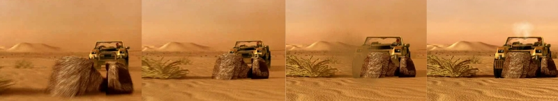
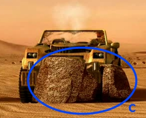
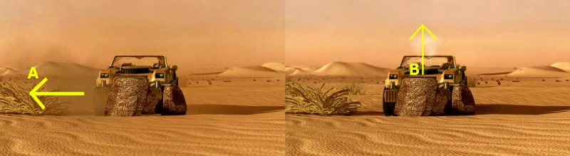

Project 1 | Project 2 |Project 3 (Team Project) |
Paper Presentation | Final Project
Introduction | [9.18 - 9.30]: Run | [9.34 - 9.37]: Hittin' the rock |
[9.38 - 9.41]: Off the car! | [9.44 - 9.48]: Round and round
[9.34 - 9.37]: HITTIN' THE ROCK

The sequence discussed here is one of the points in which things really look wrong.
The bad guy loses control of his car and crashes into a rock. Problem is that crashes
are not supposed to work that way. There is a number of obvious physical inconsistencies
in the crash animation:
- The car is running really fast before the crash, but just bumps into the rocks and
stops there.
- The rocks do not move at all during the crash, it looks like they are much more
heavy (or stuck in the ground?) that one would expect.
- The car does not deform at all because of the impact. There is no sign of damage
in any visible part of it.
Doing this sequence right is not easy at all. One possible solution would be to
'cover' the actual crash using some particle effect like dust, or smoke from the
crashed engine. This would avoid us the burden of creating (or simulating) the deformation of the car model. Even this solution would not be sufficient though: the car is
crashing so fast into the rocks that its momentum should lead it to overturn. An
obvious solution to this discrepancy would be to think of a different version of
this sequence, that leads to a lower speed impact (the bad guy
might try to brake
before the crash, for instance).
There are some
other (minor) flaws in
this part of the clip: the rock textures look quite fake (C), and the overall particle
simulation (both for dust and smoke) could have been done better. Dust particles
for instance move away really fast or disappear in mid-air just after the impact
(A). This looks wrong, but may be partially justified by the presence of strong
wind. This is inconsistent with the following particle effect though: smoke coming
from the broken engine moves up in an almost perfect straight line (B).

|